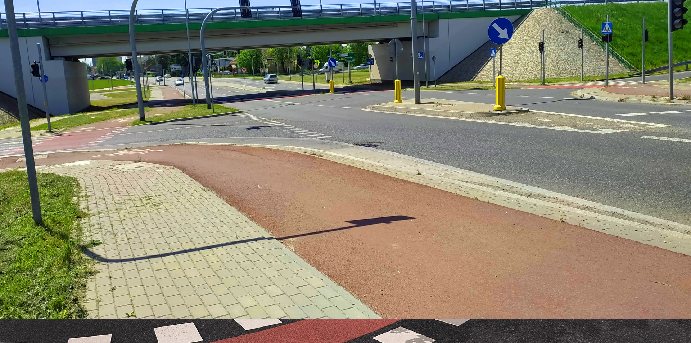
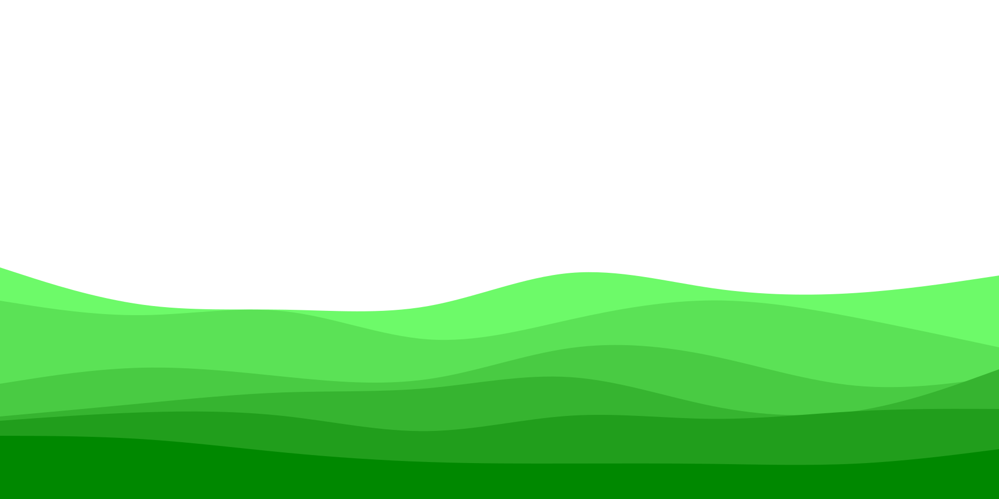

 
Przewodnik po ścieżkach rowerowych Raciborza
Rowerowy
Racibórz
Wybierz ścieżkę:
Wileńska/Warszawska 1,2km
Mariańska 1,6km
Brzeska 0,85km
Kościuszki 1km
Rybnicka
1 Maja/Dąbrowszczaków 1,5km
Wygonowa
Sudecka 1,7km
Gliwicka
Matejki 0,2km
Opawska/Łąkowa 2,3km
Karola Miarki 0,3km
Piaskowa 1,45km
Wschodnia 0,45km
Fabryczna/Szkolna 0,6km
Ścieżka wzdłuż Odry 11km
Wał przeciwpowodziowy 4,4km
Interaktywna mapa ścieżek rowerowych w Raciborzu